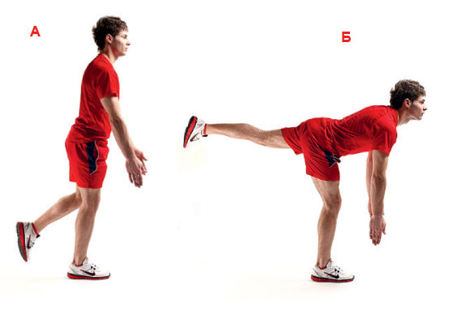

Тяга Кинга
Техника выполнения:
Каждый, кто решает начать заниматься дома спортом, сталкивается с главной проблемой — в домашних условиях практически невозможно дать достаточную нагрузку на спину. Конечно, если в доме есть перекладина задача несколько облегчается. Но что, если её нет возможности поставить? В этом случае на помощь может прийти тяга Кинга.
Это упражнение пришло из походных тренировок лифтеров. Авторство присваивают некоему атлету Кингу, но это не совсем верно. Так как, если взглянуть на изначальное название упражнения на английском языке — Bodyweight King Deadlift, то становится понятным происходжение такого названия. В переводе оно означает — «мертвая королевская тяга». Почему королевская? Потому что она очень сложна, как по технике, так и по выполнению.
А это значит, что упражнение можно выполнять и без дополнительного отягощения.
Какие мышцы работают?
Как работает тяга Кинга? Фактически, это слегка видоизменная мертвая тяга.
Она задействует такие мышцы:
- заднюю поверхность бедра;
- ромбовидные мышцы;
- мышцы кора;
- боковые мышцы пресса;
- широчайшие мышцы спины;
- бицепс бедра;
- разгибатели ноги;
- поясничные мышцы.
А если к упражнению добавить мало-мальски серьезное отягощение, то дополнительно в работу включаются такие мышцы, как двуглавый сгибатель руки и внутренний пучок запястных мышц.
Преимущества упражнения
Стоит ли это упражнение того, чтобы включать его в программу подготовки атлетов? Конечно нет! Но только в том случае, если у вас есть возможность выполнять становую тягу со штангой. Во всех остальных случаях тяга Кинга, является необходимой для домашних тренировок. Ведь без неё невозможно достаточно сильно проработать спину.
Кроме того, оно обладает следующими преимуществами:
- Базовая многосуставность. Для тех, кто хочет не только рельеф, но и постоянный рост мышечной массы, должны помнить, что без многосуставных упражнений шокировать организм невозможно, а значит невозможно заставить его расти.
- Низкая травматичность. Конечно, если взять гантель (или пакет с книгами), то последствия неправильной техники могут сильно повредить спину, но в отсутствии утяжелений, все чем может закончиться нарушение техники, это падение.
- Развитие координации и гибкости. Далеко не каждый сможет присесть на одной ноге с отклонением корпуса вперед так чтобы не упасть. При этом нога должны быть вытянутой как у балерины.
- Возможность тренироваться дома. Пожалуй, это самое главное преимущество мертвой тяги на одной ноге без веса перед всеми аналогами.
- Отсутствие дополнительной нагрузки, позволяет использовать его в своей ежедневной программе тренировок.
Все эти качества сделали тягу кинга популярной как среди женщин, так и среди профессиональных спортсменов, занимающихся кроссфитом. Ведь что может быть лучше, чем возможность поддерживать тонус мышц на отдыхе.
Противопоказаний к использованию тяги кинга без веса нет. А в случае работы с отягощением, все стандартно – нельзя работать при болях в спине или недостаточно развитом спинном корсете.
Как правильно выполнять:
Для начала расскажем о классическом варианте выполнения упражнения.
- Исходное положение — станьте ровно, сделайте небольшой прогиб в пояснице.
- Одну ногу слегка отставьте назад так, чтобы весь вес падал на ведущую ногу.
- Опуститесь на одной ноге (присядьте) с одновременным наклоном корпуса.
- Заднюю ногу в процесса максимально отставьте назад.
- Поднимитесь с сохранением прогиба.
Какие тонкости нужно знать, во время выполнения упражнения?
Первое: если вы недостаточно подготовлены для выполнения упражнения «тяга кинга», заднюю ногу можно не полностью отставлять, а достаточно держать её под собой.
Второе: нужно всегда внимательно следить за положением поясницы и взгляда. Чтобы случайно не нарушить технику, лучше смотреть на зеркало перед собой, взгляд направляя на макушку.
Третье: при наличии хорошей физической подготовки, оттянуть ногу максимально назад, и в нижней точке удержаться на 2-3 секунды.
Существует и отдельная техника, для тех кто привык постоянно прогрессировать. Для неё понадобиться груз (баклажка с водой, пакет с книгами, гантель). Для начинающего атлета хватит и 5-7 килограмм (это будет сравнимо с мертвой тягой весом в 25-30 килограмм), для профессиональных атлетов, делайте соответствующие расчеты самостоятельно, но не стоит забывать о том, что во время подъема придется удерживать равновесие.